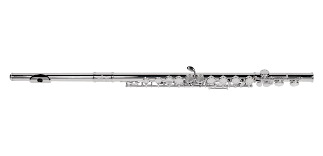
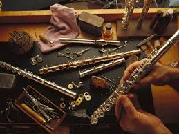

A flauta transversal é um instrumento de sopro de madeira, embora hoje seja comumente feita de metal, como prata ou níquel. Sua sonoridade clara e brilhante a torna popular em orquestras, bandas e música de câmara. Tocada na horizontal, requer controle preciso da respiração e embocadura. Sua história remonta à antiguidade, com versões primitivas em várias culturas, mas a flauta moderna foi aperfeiçoada por Theobald Boehm no século XIX, revolucionando sua mecânica e afinação.
A flauta transversal evoluiu significativamente ao longo dos séculos. Na Idade Média, era feita de madeira e usada em música folclórica e cortesã. Durante o Renascimento, sua popularidade cresceu, mas foi no período Barroco que compositores como Vivaldi começaram a explorar seu potencial expressivo. No século XIX, Theobald Boehm redesenhou o instrumento, introduzindo um sistema de chaves e um tubo cônico, melhorando a afinação e a projeção sonora, o que tornou a flauta indispensável em orquestras modernas.
A flauta transversal é composta por três partes principais: cabeça, corpo e pé. A cabeça contém a placa labial, onde o músico sopra para produzir som. O corpo abriga a maioria das chaves, permitindo a execução de diferentes notas. O pé estende a gama de notas graves. Feita geralmente de prata ou ligas metálicas, a flauta moderna possui um sistema de chaves complexo, projetado por Boehm, que facilita a execução de passagens rápidas e precisas.
Tocar flauta transversal exige domínio de várias técnicas. A embocadura, ou posicionamento dos lábios, é crucial para controlar o tom e a qualidade do som. O controle da respiração permite sustentar notas longas e executar dinâmicas variadas. Técnicas como staccato, legato e vibrato adicionam expressividade. Além disso, os flautistas devem aprender a usar os dedos com agilidade para operar as chaves, especialmente em peças virtuosísticas que exigem velocidade e precisão.
O repertório para flauta transversal é vasto e diversificado, abrangendo desde o Barroco até a música contemporânea. Compositores como Bach, Mozart e Debussy escreveram obras-primas para o instrumento. Peças como a "Sonata em Lá Menor" de Bach e o "Concerto para Flauta" de Mozart são destaques. Na música moderna, compositores como Prokofiev e Poulenc exploraram timbres únicos da flauta, enquanto a música popular e o jazz também incorporam o instrumento em arranjos criativos.
A manutenção da flauta transversal é essencial para garantir sua durabilidade e qualidade sonora. Após cada uso, o instrumento deve ser limpo internamente com um pano para remover a umidade. As chaves requerem lubrificação periódica para manter o movimento suave. Inspeções regulares por um luthier ajudam a ajustar o alinhamento das chaves e verificar a integridade das sapatilhas. Armazenar a flauta em um estojo adequado protege contra danos, prolongando sua vida útil.
